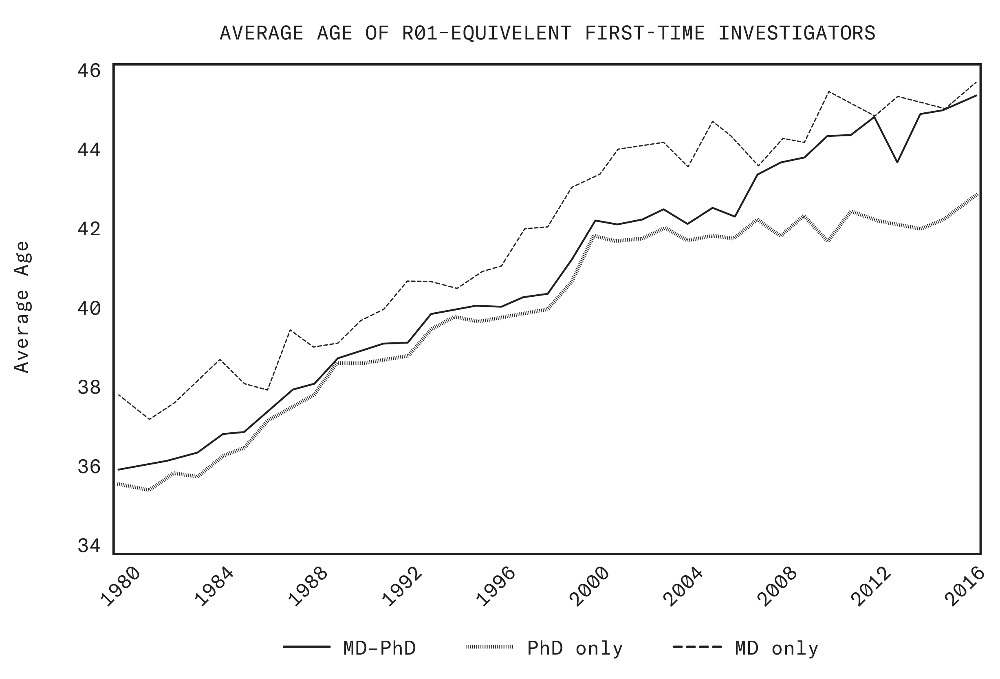

第二章 振兴美国科学技术事业
Chapter II: Revitalizing America’s Science and Technology Enterprise
II.1 科学这部机器正陷入泥潭
II.1 The Scientific Machine Is Getting Bogged Down
For the better part of a century, one of America’s most decisive advantages has been the ability to harvest novel discoveries for the prosperity of the American people. This advantage stemmed from the strength of our post-war innovation ecosystem: our universities, our national laboratories, and the symbiotic relationship between federal funding and research.
近一个世纪的大部分时间里，美国最具决定性的优势之一，就是能够收获新的发现，增进美国人民的繁荣。这一优势源自我们战后创新生态的实力：我们的大学、我们的国家实验室，以及联邦资助与研究之间的共生关系。
As Bush wrote in 1945:
正如 Bush 在 1945 年所写：
A nation which depends upon others for its new basic scientific knowledge will be slow in its industrial progress and weak in its competitive position in world trade, regardless of its mechanical skill.26
一个依赖他国提供新的基础科学知识的国家，工业进步必将缓慢，在世界贸易中的竞争地位也必将虚弱，无论它的机械技术多么高超。26
However, our scientific dominance today is at risk. While our capacity to drive breakthroughs in basic science remains the envy of the world, as described in Chapter I, competitors are closing the gap. And while federally funded science continues to generate a high return on investment for our taxpayers, a growing body of work provides evidence that, across many fields, our researchers are fighting against an increasingly calcified system that has driven up the cost of scientific progress over time.27
然而，我们今天在科学上的主导地位正面临风险。正如第一章所述，我们推动基础科学突破的能力仍然令世界羡慕，但竞争者正在缩小差距。而且，尽管联邦资助的科学持续为我们的纳税人带来很高的投资回报，越来越多的研究却提供证据表明，在许多领域，我们的研究者正在与一套日益僵化的体系相抗争，这套体系不断推高科学进步的成本。27
Despite massive funding increases in biomedical research since the 1990s, the rate of significant breakthroughs appears to have slowed, drug approvals have flatlined, and the enterprise’s productivity, hampered by growing burdens, has declined.28 It has become common to speak of “Eroom’s law” (Moore’s law in reverse) describing the predictable decline in the number of new drugs approved per billion dollars spent. Since 1950, pharmaceutical R&D efficiency, as measured in new drugs per billion dollars, has fallen roughly eighty-fold in inflation-adjusted terms, halving approximately every nine years.29 And although the NIH’s budget has more than doubled since the 1990s, we have not seen a proportional increase in breakthrough treatments, citation impact per dollar spent, or scientific productivity.30
As a funder and institution-builder, the Federal government has fallen behind in creating environments where American scientists can do their best work. Evidence shows that the inputs required to sustain past rates of improvement have increased sharply across many fields. A famous study demonstrated that sustaining the historical pace of Moore‑style gains in transistor density has required a much larger workforce. Since the early 1970s, the number of researchers needed to double transistor density has risen more than eighteenfold, implying a 7% annual decline in “ideas productivity.” The pattern repeats in agriculture, where research effort has multiplied by factors of three to 25 since 1969, depending on the metric, while yield growth remains mostly flat; and in medicine, where the “years of life saved” per clinical trial peaked in the mid-1980s before falling sharply.31
作为资助者与制度建设者，联邦政府在营造让美国科学家做出最佳工作的环境方面已经落后。有证据表明，在许多领域，维持以往进步速度所需的投入已急剧增加。一项著名研究显示，要维持晶体管密度历史上那种 Moore 式的提升速度，需要远为庞大的研究队伍。自 20 世纪 70 年代初以来，使晶体管密度翻倍所需的研究人员数量增至原来的十八倍以上，这意味着「想法生产率」每年下降 7%。这一模式在农业领域重演：自 1969 年以来，按不同指标衡量，研究投入增加了 3 到 25 倍，而产量增长却基本持平；医学领域也是如此：「每次临床试验所挽救的生命年数」在 20 世纪 80 年代中期达到峰值，随后急剧下降。31
Admittedly, slowdown in mature scientific subfields may be inevitable. One might argue that it is natural for the pace of progress to decline, once the proverbial low-hanging fruit has been picked. A slowdown could even be read as evidence of success. However, this intuition has repeatedly been proven wrong throughout modern history. And one would expect new mechanisms for sharing information, and new ways to compress scientific knowledge, to be countervailing forces that speed innovation.
诚然，成熟科学子领域的放缓或许不可避免。有人可能会说，众所周知「低垂的果实」一旦摘完，进步速度自然就会下降。放缓甚至可以被解读为成功的证据。然而，在现代历史上，这种直觉一再被证明是错误的。而且，人们本会期待新的信息共享机制和压缩科学知识的新方式成为抵消性力量，加快创新的步伐。
The pattern of apparent stasis in a scientific field exploding into progress, opened by new discoveries and changes in scientific institutions, has repeated itself again and again. These punctuated equilibria are, in fact, the essential story of science. Max Planck famously had a professor tell him that physics was nearly as developed as mature fields like geometry, only for Planck’s own discoveries in quantum mechanics to completely reorient our understanding of the physical world. Many medical doctors believed their field was reaching perfection in the late 19th century, with one writing that “there cannot always be fresh fields for conquest by the knife.”32 Yet soon, the concurrent transformation of medical education and emergence of research hospitals created the institutional foundations for a broader understanding of disease and for modern medicine as we know it.33
Repeatedly, the tree has only looked bare from the current perspective; the fruits have not been exhausted at all. We had merely lacked the tools with which to pick them.
一再出现的情形是：站在当下看，那棵树显得光秃秃的；果实其实远未被摘尽。我们只是缺少摘取它们的工具。
By adopting new social and material technologies, we can again accelerate the pace of discovery. It falls to us, as it fell to our predecessors, to imagine new machines capable of exploring the endless frontier.
通过采用新的社会技术与物质技术，我们能够再次加快发现的步伐。想象出能够探索无尽前沿的新机器，这一责任曾落在我们的前辈身上，如今也落在我们身上。
II.2 被日益增多的摩擦拖慢
II.2 Slowed by Growing Frictions
Our first step is to strip away the frictions that keep our brightest minds from pursuing the ideas most likely to lead to transformative breakthroughs. Consider a young scientist with a promising proposal for federally funded research, and the decades of accumulated institutional bureaucracy she must navigate to seek support in today’s enterprise.
我们的第一步，是清除那些摩擦：它们让最聪明的头脑无法去追求最有可能带来变革性突破的想法。不妨设想一位年轻科学家，她有一个很有前景的联邦资助研究提案，而为了在今天这套事业体系中争取支持，她必须穿越数十年积累起来的机构官僚程序。
She spends two to four months drafting the proposal, assembling preliminary data for the same project requiring funding, and navigating her university’s internal review process. If she applies to NIH in February, she will be lucky to learn whether she succeeded by the end of the year. Certain grants even have up to a 20-month lead time.34 That is almost as long as it took for the Boeing 747 “Jumbo Jet” to go from the drawing board to production.35
If she is awarded the grant, she will face mounds of paperwork. From 1991 to January 2025, the Federal Government imposed at least 270 new requirements on research grants, far outpacing efforts to reduce administrative burdens on researchers.36 Federally negotiated indirect cost rates now reach 50 to 60% of direct research costs at major institutions, a figure our scientist will have to bear in mind as she drafts her application.37 While effective rates often run closer to 40%, this remains a substantial tax on research budgets, shaping what she asks for. Some of this covers legitimate infrastructure she uses every day, but much of it funds administrative expansion at her university that has outpaced the growth of research itself.
Senior investigators can delegate paperwork to postdoctoral researchers, but our scientist runs a small lab and has no one to delegate to. She writes grant applications using hours that should have gone to experiments or mentoring students. This is a tax on innovation that does not appear in the federal budget but costs the nation dearly in foregone breakthroughs. These burdens also create a perverse incentive structure, in which scientists who excel at research administration leapfrog those who excel at research performance. The weight falls heaviest on the scientists America needs most.
资深研究者可以把文书工作交给博士后去做，但我们的科学家只带一个小实验室，无人可交。她用来写资助申请的时间，本应属于做实验或指导学生。这是对创新的一笔税，它不出现在联邦预算里，却让国家在错失的突破上付出高昂代价。这些负担还造成一种扭曲的激励结构：擅长研究管理的科学家，会在晋升上超过擅长研究表现的科学家。而这份重量，最重地压在美国最需要的那批科学家身上。
II.3 在位者之税
II.3 The Incumbency Tax
The academy is a long and difficult road, leading to few stable positions. We should encourage early-career scientists at every step of the academic crucible, from undergraduate lab assistant to first faculty job, to pursue big and creative ideas. We should enable and empower scientists who persist into a research career to focus on breakthrough research from the start. But the data suggest we do not. Between 1980 and 2008, the average age of the NIH principal investigators rose from 39 to 51 (Figure 4), while the average age of new principal investigators rose from 36 to 42, exceeding the average age of Nobel Prize-winning contributions in related fields over a comparable period.38 These patterns lengthen feedback loops and bias careers toward safer, incremental projects during the long apprenticeship years. Our early-career scientist has seen this gradual graying of our research workforce, and is likely to adjust her ambitions accordingly.
学术之路漫长而艰难，能通向的稳定职位却寥寥无几。从本科阶段的实验室助理到获得第一份教职，在学术熔炉的每一段路程上，我们都应当鼓励早期职业科学家去追求宏大而有创造力的想法。对于那些坚持走下去、真正投身研究生涯的科学家，我们应当让他们有能力也有底气，从一开始就专注于突破性研究。但数据表明，我们并没有做到这一点。1980 年至 2008 年间，NIH 首席研究员（PI）的平均年龄从 39 岁升至 51 岁（图 4），新晋首席研究员的平均年龄则从 36 岁升至 42 岁，超过了同一可比时期内相关领域诺贝尔奖获奖成果的平均年龄。38 这样的格局拉长了反馈回路，并在漫长的学徒岁月里把职业选择推向更稳妥、更渐进的项目。我们这位早期职业科学家目睹了科研队伍这种缓慢的老化，很可能会据此调整自己的抱负。
Figure 4: The average age of first-time NIH investigators has increased consistently over the past four decades, from mid-thirties in 1980 to the early forties today, across all degree types.39
图 4：在过去四十年里，NIH 首次获得资助的研究者的平均年龄持续上升，从 1980 年的三十五六岁升至今天的四十岁出头，且各类学位背景皆然。39

Our scientist may accept that these longer training cycles reflect increasing specialization, but these incumbency dynamics also dampen turnover at the frontier. The effect is encapsulated by Planck’s famous (mis)quote that “science advances one funeral at a time,” and is well documented.40 Studies show that when a star scientist in biomedicine passes unexpectedly, outsider contributions surge into the space the star’s network has informally dominated, and those outsider papers are then more likely to become highly cited.41
At the system level, researchers find that as disciplinary fields grow large, attention ossifies around a fixed canon. New papers are less likely to displace central ideas, and even highly cited ones tend to receive citations in a burst rather than through steady accumulation.42
在系统层面，研究者发现，随着学科领域不断膨胀，注意力会固着于一套固定的经典。新论文更难取代核心观点，即便是高被引论文，其引用也往往一次性爆发，而非稳步累积。42
II.4 择优机制的弱化
II.4 Weakened Meritocracy
Our up-and-coming scientist is further discouraged by the corrosion of the merit principle that once made American research the envy of the world. What began with the NSF’s “broader impacts” criterion, which was a reasonable effort to ensure taxpayer funds benefit society, has evolved into a sweeping distortion of the selection process that reduces mobility for the best researchers. Between 2021 and 2024, the share of new NSF grants focusing on diversity, equity, and inclusion initiatives surged from fractions of a percent to more than a quarter.43 Our scientist has learned the new rules from principal investigators she has worked for, and is tempted to dress up her otherwise excellent technical proposals with ideological language to survive review. Until recently, NASA required research proposals to include plans for furthering “inclusion goals,” which were to be reviewed by review panels one-half composed of “diversity, equity, and inclusion professionals.”44
我们这位崭露头角的科学家，还因为择优原则的侵蚀而更加气馁——这一原则曾让美国科研令世界欣羡。事情始于 NSF 的「广泛影响」标准，那本是一项合理的努力，意在确保纳税人的钱造福社会，如今却演变成对遴选过程的全面扭曲，压缩了最优秀研究者的上升通道。2021 年至 2024 年间，NSF 新批资助中聚焦多元化、公平与包容举措的比例，从区区零点几个百分点飙升至四分之一以上。43 我们这位科学家从自己曾为之工作的首席研究员那里学到了这套新规则，为了通过评审，她很想给自己本来非常出色的技术提案套上意识形态的包装。直到不久前，NASA 还要求研究提案纳入推进「包容目标」的计划，而这类计划要交由评审组评审，其中半数成员是「多元化、公平与包容专业人士」。44
The American scientific establishment has placed politics above merit and performance before. In the 1920s, elite universities implemented quotas limiting Jewish enrollment. Harvard’s president worried about a “Jewish problem” as Jewish students grew from 6% to 22% of the student body. The methods are strikingly familiar: subjective criteria for “character” and “leadership,” diversity requirements designed to recruit from regions with fewer Jewish residents, and “holistic” reviews that obscured the actual basis for decisions. These quotas, maintained for decades, excluded some of the most talented minds in American science.45
美国的科学建制此前也曾把政治置于择优与绩效之上。20 世纪 20 年代，精英大学曾推行限制犹太人入学的配额。随着犹太学生占学生总数的比例从 6% 升至 22%，哈佛校长曾为一个「犹太人问题」而忧心。当年的手法令人分外眼熟：以「品格」和「领导力」作为主观标准，设置旨在从犹太居民较少的地区招生的多元化要求，以及用「整体性」评审掩盖决策的真实依据。这些配额延续了数十年，把美国科学界一些最有才华的头脑排除在外。45
We should learn from this history rather than repeat it. When qualified candidates are passed over for reasons unrelated to their scientific ability, when they are judged for who they are rather than for their ideas, we injure the cause of progress, discovery, and America’s scientific competitiveness.
我们应当从这段历史中吸取教训，而不是重蹈覆辙。当合格的候选人因为与科研能力无关的原因而被弃用，当他们被评判的依据是身份而不是想法，我们就在损害进步、发现与美国科学竞争力的事业。
II.5 错位的激励
II.5 Misaligned Incentives
Even if the ambitious young scientist successfully navigates the selection gauntlet, she enters an academy whose incentives are severely misaligned with good scientific conduct.
即便这位有雄心的年轻科学家成功闯过遴选的重重关卡，她所进入的学术界，其激励结构也与良好的科研规范严重错位。
Observing older peers, our scientist has learned that taking the long shot to challenge established paradigms may threaten her ability to deliver results and advance to tenure; yet by the time she achieves tenure, a substantial portion of her most creative years will be behind her. She notices, too, that the tenure and promotion system seems to reward quantity over quality. Cutting work into the smallest publishable units, which researchers call “salami-slicing,” often pays off more than making an ambitious attempt at transformative discovery.
观察年长的同行，我们这位科学家明白：为挑战既定范式而押注于高风险的长线研究，可能危及她拿出成果并晋升终身教职的能力；而等到她拿到终身教职时，自己最具创造力的岁月已经有相当一部分过去了。她还注意到，终身教职与晋升制度似乎重数量而轻质量。把研究工作切成尽可能小的可发表单元——研究者称之为「切香肠式发表」——往往比放手一搏、追求变革性发现更划算。
Our scientist knows a better way is possible. Private-sector laboratories and startups routinely give young researchers tremendous responsibility, and there they are afforded the opportunity to change the world. Research shows that when investigators receive longer-horizon support with tolerance for early failure, they produce portfolios with both more hits and more misses, the signature of genuine exploration.46 But project-tied, short-cycle grants dominate the federal landscape, and our scientist feels pushed toward safer, more “fundable” territories. These incentives also help explain why her peers now commonly reach professional independence only in their forties, not their early thirties as in previous generations.
我们这位科学家知道，更好的做法是存在的。私营部门的实验室和初创企业常常把重任交给年轻研究者，在那里，他们有机会改变世界。研究表明，当研究者获得更长周期的支持、且早期失败得到宽容时，他们产出的成果组合会既有更多成功，也有更多失败——这正是真正探索的标志。46 但在联邦资助格局中，与项目绑定、周期短小的资助占据主导，我们这位科学家感到自己被推向更稳妥、也更「容易拿到资助」的领域。这些激励也解释了，为什么她的同龄人如今普遍要到四十多岁才获得职业上的独立，而不像前几代人那样在三十岁出头就做到了。
The publication economy amplifies these problems. The young scientist quickly learns that there is a particular narrative pattern common to all articles published in the top journals. Meta-research has documented a structural reduction in novelty in papers and patents, which are less disruptive and less likely to reorient a field than in prior decades.47 Scientists eschew negative results, even though failed experiments often teach more than successes. Competitive environments amplify this positive-results bias, crowding out careful negative findings and tool-building that lack tidy narratives. Because the system pays by the paper, it under-invests in public goods like datasets, open-source code, and shared engineering infrastructure. The team science now required at the technological frontier gets abandoned for work that generates individual credit.
论文经济放大了这些问题。年轻科学家很快就知道，顶级期刊上发表的所有文章都遵循某种特定的叙事套路。元研究已经记录到，论文与专利的新颖性出现了结构性下降：与过去几十年相比，它们更缺乏颠覆性，也更不可能重新调整一个领域的方向。47 科学家回避负面结果，尽管失败的实验往往比成功教会我们更多。竞争性环境又放大了这种正向结果偏好，把缺少漂亮叙事的严谨负面发现和工具建设挤出局。由于这套体系按论文付酬，它对数据集、开源代码和共享工程基础设施等公共品投入不足。技术前沿如今所需要的团队科学，也因此被舍弃，让位于能带来个人功劳的工作。
II.6 可重复性危机
II.6 The Reproducibility Crisis
As many leaders in American science agree, the research enterprise must learn to value and incentivize reproducibility studies and to hold its members responsible for failures in the scientific process.
正如美国科学界许多领军人物所认同的那样，科研事业必须学会重视并激励可重复性研究，并让其中的人对科学过程中的失误承担责任。
The reproducibility crisis, particularly acute in the social sciences, has undermined future research and public confidence. In one study that attempted to reproduce 100 psychology studies, fewer than 40 succeeded.48 The challenge extends across other fields as well. In Alzheimer’s research, a celebrated 2009 paper in a top journal presented a promising path to treating the disease.49 By 2012, other researchers had demonstrated its irreproducibility, and internal reviews at the sponsoring pharmaceutical company terminated drug development based on its findings.50 Yet the paper accumulated more than 800 citations, misdirecting research priorities and federal funding for another decade.51 Its lead author became a university president, and the paper was only finally retracted 15 years after publication, shortly after the lead author resigned amid a broader investigation into data manipulation in his laboratories.52 The scientific review process worked, eventually, but far too late.
可重复性危机在社会科学领域尤为严重，它损害了后续研究与公众信心。有一项研究试图重复 100 项心理学研究，其中成功的不到 40 项。48 这一挑战同样遍布其他领域。在阿尔茨海默病研究中，2009 年发表在顶级期刊上的一篇著名论文，提出了一条治疗该病的希望之路。49 到 2012 年，其他研究者已证明其结果无法重复，出资的制药公司经内部审查后，终止了基于该发现开展的药物开发。50 然而这篇论文仍累积了 800 多次引用，在此后十年里持续误导研究优先级与联邦经费的投向。51 它的第一作者后来成为一所大学的校长，而论文直到发表 15 年后才最终被撤稿——就在这位第一作者因其实验室的数据操纵问题受到更广泛调查而辞职之后不久。52 科学评审流程最终起了作用，但来得太晚了。
The good scientist knows that knowledge is probabilistic, that evidence accumulates gradually, and that uncertainty is inherent. But the system pressures researchers to deliver results in confident, discrete units. Journal editors want clear narratives. University press offices demand headlines. Nuance dies, as a result, in the race for attention.
优秀的科学家懂得，知识是概率性的，证据是逐步积累的，而不确定性是内在固有的。但这套体系却迫使研究者以笃定而彼此割裂的单元交付成果。期刊编辑想要清晰的叙事，大学新闻办公室索要抓眼球的标题。结果，在争夺注意力的竞赛中，细微之处荡然无存。
This failure has spilled over to political decision-making. With notable and still-undercelebrated exceptions, the scientific establishment during the COVID-19 pandemic failed to recognize that science can only describe the world as it is, not the world that ought to be; while it informs policymakers, it cannot determine the best policy, or the tradeoffs that should be made. The scientific consensus to shutter schools demonstrated a profound inability to confront uncertainty or integrate knowledge across specializations. The best available evidence indicated that children were neither at high risk of the disease nor significant vectors of transmission. Conversely, the developmental costs of remote schooling and isolation were entirely predictable. Yet, scientific officialdom produced a “closed-ranks” response, preferring blind consensus over informed dissent. The scientific consensus failed to check its own work, communicate the limits of its own certainty, or remain skeptical of its own assumptions.
这一失灵已经外溢到政治决策之中。除了少数值得注意、却至今未获足够肯定的例外，新冠疫情期间的科学界建制未能认识到：科学只能描述世界实际的样子，而不能描述世界应当是什么样子；它为决策者提供依据，却无法决定什么是最好的政策，也无法决定应当作出哪些取舍。主张关闭学校的科学共识，暴露出一种严重的无能：既无法正视不确定性，也无法整合不同专业的认知。当时可得的最佳证据表明，儿童既不是这种疾病的高风险人群，也不是重要的传播媒介。反过来说，远程教学与隔离带来的发展代价完全是可以预见的。然而，科学界的官方体系给出的却是一种「一致对外」的回应，宁要盲目的共识，也不要知情的异议。这种科学共识未能检视自己的工作，未能说明自身确定性的边界，也未能对自己的假设保持怀疑。
II.7 以及问责的缺失
II.7 And A Lack of Accountability
Even as our individual scientists continue to do world-changing work, performing miracles that save American lives and defend our homeland, these challenges reflect a systematic breakdown in the lines of accountability that align the scientific enterprise with the public interest.
即便我们一位位科学家仍在做着改变世界的工作，创造着挽救美国人生命、保卫国土的奇迹，这些挑战也反映出：那条使科学事业与公共利益保持一致的问责链条，已出现系统性的断裂。
While repeating the mantra that science must be “independent” of politics, parts of academia have become highly dependent on government funding. But as Bush understood, federal support for science must be politically accountable. Accountability does not mean dictating how a research agenda is to be executed, nor turning away from the basic research that has long been the wellspring of American prosperity. Quite the opposite. It means ensuring that the system serves the researchers who are its lifeblood, rather than the entrenched interests that have accreted around them. Only those parts of the national research enterprise directly responsive to the political process can prioritize among the many potential avenues of inquiry, fund those that best reflect national priorities, and be checked when the scientific process breaks down. In a self-governing nation of laws and citizens, the Federal Government elected by the people shall have the ability to determine how to allocate public resources in the public interest.
学术界的一部分人一边反复念叨科学必须「独立」于政治，一边却已高度依赖政府经费。但正如 Bush 所理解的那样，联邦对科学的支持必须经受政治问责。问责并不意味着规定一项研究议程该如何执行，也不意味着放弃长期以来作为美国繁荣之源的基础研究。恰恰相反。它意味着确保这套体系服务于作为其命脉的研究者，而不是服务于在他们周围层层堆积起来的既得利益。只有国家研究事业中那些直接回应政治过程的部分，才能在众多可能的探究路径之间排出优先次序，资助那些最能反映国家优先事项的路径，并在科学过程失灵时受到问责。在一个由法律和公民自我治理的国家里，由人民选举产生的联邦政府应当有权决定如何为了公共利益配置公共资源。
Within that framework, the independent role of federally funded scientists is to design and execute the research and experimentation program that achieves those objectives. A properly accountable system is one that protects their freedom to do so.
在这一框架之内，由联邦资助的科学家所承担的独立角色，是设计和执行能够实现这些目标的研究与实验计划。一个问责得当的体系，正是保护他们如此行事的自由的体系。
Originally intended to shield researchers from external political meddling, the invocation of “scientific autonomy” has too often been inverted. Autonomy, and indeed America’s culture of intellectual freedom, remains one of our most valuable scientific assets, but it has been cynically used as a shield against accountability, as scientific institutions are slow to police themselves, or even engage in political meddling of their own, often at the expense of our brightest and most energetic minds. The same scientists who receive grants often serve as the reviewers who dispense them, enforcing a consensus that perpetuates existing biases. Federal funding agencies, in particular, lack the feedback mechanisms found in the private sector. In venture capital or philanthropy, poor judgment faces the swift discipline of the market; bad bets lead to insolvency. In the federal sphere, absent deliberate action, there is no penalty for rejecting a breakthrough, nor for funding safe work that changes nothing.
「科学自主」的说辞原本意在让研究者免受外部政治干预，如今却常常被颠倒过来使用。自主——以及美国的知识自由文化——仍然是我们最宝贵的科学资产之一，但它已被玩世不恭地用作抵御问责的挡箭牌：科学机构在自我纠察上行动迟缓，甚至自己也从事政治干预，且往往以我们最杰出、最有干劲的头脑为代价。拿到资助的科学家，常常同时又是分配资助的评审人，维护着一种让既有偏见得以延续的共识。联邦资助机构尤其缺少私营部门那种反馈机制。在风险投资或慈善领域，判断失误会迅速受到市场纪律的约束；押错注就会破产。而在联邦领域，如果没有刻意的行动，拒绝一项突破不会受到惩罚，资助那种什么也改变不了的稳妥工作同样不会。
II.8 一条更好的前行之路
II.8 A Better Path Forward
One necessary step in restoring accountability to federally supported science is exercising better oversight of scientific funding so that research activities align with the best interests of the American people, through the intentional and principled allocation of capital.
要让联邦支持的科学重获问责，一个必要步骤是对科学资助实施更好的监督，通过有意识、有原则的资本配置，使研究活动与美国人民的最大利益保持一致。
Our federal agencies distribute approximately $200 billion in annual R&D funding. Yet we have no systematic framework for identifying where those dollars could catalyze the greatest scientific returns, with deference instead given to the same incumbents that consume the funding. This process produces a portfolio that emerges by accident rather than intentional design.
我们的联邦机构每年分配约 2,000 亿美元的研发经费。然而，我们并没有一套系统性框架去识别这些资金在何处能催生最大的科学回报，反而把决定权让给了消耗这笔经费的同一批既有机构。这一过程产生的组合，是偶然形成的，而非刻意设计的结果。
Driving meaningful improvements in our portfolio allocation will require a coordinated effort, but it is not impossible. We already have proof that bold models can dramatically accelerate progress and deliver new scientific opportunities for our researchers.
要实质性地改进我们的资源组合配置，需要协调一致的努力，但这并非不可能。我们已经有了证据：大胆的模式能够极大加快进展，为我们的研究者带来新的科学机会。
Throughout history, Americans have developed various ways to support scientific progress that depart from the university-based, principal investigator-driven grant. These include Cold Spring Harbor Laboratory, a leading institution of biological research, founded in 1890, and the Institute for Advanced Study, founded in 1930, which gave luminaries like Einstein, Noether, Oppenheimer, and Gödel an opportunity to explore revolutionary ideas. Each provided a home for new kinds of science.
纵观历史，美国人发展出多种不同于以大学为依托、由首席研究员（PI）主导的资助方式来支持科学进步。其中包括 1890 年创立、生物学研究的顶尖机构冷泉港实验室（Cold Spring Harbor Laboratory），以及 1930 年创立、曾让 Einstein、Noether、Oppenheimer、Gödel 等杰出人物有机会探索革命性思想的普林斯顿高等研究院（Institute for Advanced Study）。它们各自都为新型科学提供了一处家园。
Another famous example is DARPA, which gave us GPS, the internet, stealth aircraft, and autonomous vehicles. Rather than relying on consensus-based review panels as the primary decision-making mechanism, DARPA gives individual program managers the power to make bold technological bets and actively curate teams to execute them. Congress has taken notice, creating the Advanced Research Projects Agency for Health (ARPA-H), Advanced Research Projects Agency–Energy (ARPA-E), and other similar agencies, collectively representing billions of dollars organized around the program-manager model rather than traditional peer review.
另一个著名的例子是 DARPA，它给我们带来了 GPS、互联网、隐形飞机和自动驾驶汽车。DARPA 不把基于共识的评审小组作为主要决策机制，而是赋予单个项目经理做出大胆技术押注的权力，并主动遴选团队去执行这些押注。国会注意到了这一点，于是设立了高级健康研究计划署（ARPA-H）、高级能源研究计划署（ARPA-E）以及其他类似机构；这些机构合计掌握数十亿美元，围绕项目经理模式、而非传统同行评议来组织。
Over the past decade, a growing community of researchers, philanthropists, and policymakers has turned the lens of scientific inquiry onto science itself, asking precisely how we can reduce frictions, align incentives, increase accountability, and inject more dynamism into the scientific enterprise. This field, often called metascience or the “science of science,” has begun generating rigorous evidence of what actually works, both by studying why models like DARPA or the Institute for Advanced Study succeed, and by running controlled experiments on new approaches.
过去十年间，一个不断壮大的研究者、慈善家与决策者群体把科学探究的镜头对准了科学本身，追问我们究竟怎样才能减少摩擦、对齐激励、增强问责，并为科学事业注入更多活力。这个领域常被称为元科学或「科学之学」，它已开始产生关于什么真正有效的严谨证据：既研究 DARPA 或普林斯顿高等研究院这类模式为何成功，也针对新做法开展对照实验。
Philanthropies and federal agencies are now deliberately applying these insights and piloting new organizational forms to address gaps the traditional academic system cannot fill. For instance, the NIH has recently created a metascience office, and the new Directorate for Technology, Innovation and Partnerships (TIP) within the NSF has begun experimenting with alternatives to traditional peer review, designing and executing controlled experiments in alternative funding mechanisms in partnership with metascience researchers.53
慈善机构与联邦机构如今正在有意识地运用这些洞见，试点新的组织形式，以填补传统学术体系无法填补的空白。例如，NIH 最近设立了一个元科学办公室，而 NSF 内部新设的技术、创新与伙伴关系学部（TIP）已开始试验传统同行评议之外的其他做法，与元科学研究者合作，就替代性资助机制设计和执行对照实验。53
These scattered successes confirm the possibility of systematically redesigning how we organize, fund, and conduct science. Realizing that potential will require us to understand how the nature of scientific work has changed, what new institutional forms those changes demand, and what funding mechanisms can best support them.
这些零散的成功证实，我们有可能系统地重新设计科学的组织、资助与开展方式。要兑现这一潜力，我们需要理解科学工作的性质发生了怎样的变化，这些变化要求什么样的新型制度形式，以及什么样的资助机制最能支撑它们。
The answers will not come from any single reform but from building the capacity for continuous experimentation, for applying the scientific method to the scientific enterprise itself.
答案不会来自任何单一改革，而来自建设一种持续实验的能力——把科学方法应用于科学事业自身的能力。
II.9 适应科学性质的变化
II.9 Adapting to the Changing Nature of Science
The 19th and 20th centuries witnessed a series of institutional innovations that ushered in a fertile era of discovery. The natural philosophy of earlier ages, where a single scholar might range freely across what we now call physics, chemistry, and biology, had given way to specialized disciplines. Each had its own departments, journals, and staff. This transformation, pioneered primarily in German universities during the 19th century, laid the foundation for scientific professionalization.54
19 世纪和 20 世纪见证了一系列制度创新，它们开启了一个发现成果丰硕的时代。更早时代的自然哲学——那时一位学者可以自由跨越我们今天所称的物理学、化学和生物学——已让位于专业化的学科。每个学科都有自己的系、期刊和人员。这一转变主要以 19 世纪的德国大学为先驱，为科学的职业化奠定了基础。54
America adopted this architecture of discovery and gave it a distinctive twist. Land-grant universities democratized access to scientific education, the college major system restructured undergraduate training, and technical universities focused on industry. These innovations proved remarkably successful. The combination of disciplinary depth with clear career ladders enabled the specialization that carried us into the scientific lead.
美国采纳了这套发现的组织架构，并做了别具一格的改造。赠地大学使科学教育的机会走向大众，大学主修专业制度重构了本科训练，技术大学则面向产业。这些创新被证明极为成功。学科深度与清晰职业阶梯的结合，造就了把美国送上科学领先地位的专业化。
Yet the disciplinary framework that served us in the 20th century sits uneasily with science in the 21st. The most consequential questions of our era, such as how proteins fold and function, how certain disorders emerge from neural circuits, and how we can harness fusion energy, do not respect departmental boundaries.
然而，在 20 世纪服务于我们的学科框架，与 21 世纪的科学已难以契合。我们时代最重大的问题，例如蛋白质如何折叠并发挥功能、某些疾病如何从神经回路中产生、我们如何驾驭聚变能，并不理会院系的边界。
The protein folding problem that earned the 2024 Nobel Prize in Chemistry belonged to no single academic department; it required deep knowledge of biochemistry alongside advances in AI and engineering at scale.55 Two of the three laureates came from a corporate research lab where team-based science harnessed diverse expertise. The third laureate’s work was seeded by NSF and later heavily supported by private philanthropy, spinning off into a large-scale, university-affiliated center.56 Both efforts depended on decades of infrastructure building and open science, such as the Critical Assessment of Structure Prediction competitions and the Protein Data Bank, built by over 60,000 experimentalists who shared their findings freely.57
The shape of an institution determines the shape of the science it produces.58 The university laboratory, centered on the principal investigator and a rotating cast of graduate students, excels at curiosity-driven research and at training the next generation within established disciplines. The industrial R&D lab, with its permanent staff and tight feedback loops, is suited to engineering projects.59 The national laboratory and large-scale, multinational scientific projects maintain unique capabilities too large for any single actor to sustain. Each form is a container that dictates what research becomes possible and what research never gets attempted.
A growing share of scientific problems now demands containers that do not yet exist at scale in the federal portfolio, and does not yield immediate products that contribute to a company’s bottom line.60 Mapping the wiring of the mammalian brain, for example, requires not a student on a three-year cycle, but a sustained engineering team with the flexibility to scale quickly and hire from industry. It necessitates industrial-scale data collection and analysis, which is infeasible under the fragmented structure of traditional academic grants. It produces a public good whose benefits a single biotechnology company cannot fully internalize.
如今，越来越大比例的科学问题所需要的容器，在联邦资助组合中尚未达到相应规模，而且这些问题不会产生能立即贡献于企业利润的产品。60 例如，绘制哺乳动物大脑的线路，需要的不是一个以三年为周期的学生，而是一支可持续的工程团队，能够灵活地迅速扩大规模并从产业界招人。它需要工业规模的数据采集与分析，而这在传统学术资助那种碎片化的结构下不可行。它产出的是公共品，其收益单靠一家生物技术公司无法完全内部化。
This pattern extends across other key problems. Achieving practical fusion energy depends on progress in plasma physics, materials science, advanced manufacturing, and systems engineering, paired with the ability to scale up through venture funding. Understanding cognition well enough to address mental disease will benefit from new neural recording probes, machine learning suites that analyze neural activity patterns, and systems that deliver precise, closed-loop therapeutic interventions. Creating new institutional forms, then, plays a central role in bringing new scientific projects to life.
这一模式也延伸到其他关键问题。实现实用化的聚变能，取决于等离子体物理、材料科学、先进制造和系统工程方面的进展，再加上借助风险投资扩大规模的能力。要深入理解认知、达到足以应对精神疾病的程度，将受益于新型神经记录探针、分析神经活动模式的机器学习套件，以及能够实施精准闭环治疗干预的系统。因此，创造新的制度形式，在让新的科学项目落地生根方面发挥着核心作用。
The standard NIH R01 grant, which typically offers a quarter of a million dollars a year for a pre-specified project, is the workhorse of American biomedical research. It excels at supporting hypothesis-driven science by small teams on tractable questions. But over-reliance on this structure creates systematic blind spots. Projects requiring tens of millions of dollars and a team of dozens fall outside the container of what any single investigator can assemble. Academic containers are further shaped by labor availability. Employing postdocs and graduate students remains effective for training the next generation of scientists, but doing so is poorly suited for executing large-scale, mission-driven programs that require continuity, specialization, and long-term institutional memory. Frequent turnover fragments efforts and slows progress. As science funders have noted, no technology company would entrust its core R&D to a workforce composed primarily of temporary trainees, yet this is the standard model in academic research.61 A more balanced approach would expand stable, well-compensated career paths for staff scientists, engineers, and technicians, roles critical to sustained institutional capability.
NIH 标准的 R01 资助通常为一项预先指定的课题每年提供 25 万美元，是美国生物医学研究的主力。它擅长支持小团队就可处理的问题开展假设驱动型科学。但过度依赖这一结构会制造系统性的盲区。需要数千万美元和数十人团队的项目，超出了任何单个研究者所能拼装的容器。学术容器还进一步受制于劳动力的可得性。雇用博士后和研究生，对于培养下一代科学家仍然有效，但用来执行需要连续性、专业分工和长期机构记忆的大规模使命导向型计划则很不合适。频繁的人员更替使努力变得碎片化，也拖慢进展。正如科学资助方所指出的，没有哪家技术公司会把核心研发托付给一支主要由临时受训者组成的队伍，但这却是学术研究的标准模式。61 更平衡的做法，是为专职科学家、工程师和技术人员拓宽稳定且报酬优厚的职业路径——这些角色对维持机构能力至关重要。
44% of researcher time spent on grant administration
研究者有 44% 的时间花在资助管理上
II.10 依靠新型执行主体
II.10 Through Novel Performers
Between the atomized work of the individual investigator and billion-dollar mega-projects like particle colliders lies a vast middle ground of mid-scale science. These are scientific problems requiring tens of millions of dollars, coordinated teams of ten to a hundred people, and timelines of half a decade. They range from the development of minimally invasive brain-computer interfaces that help people with Parkinson’s to the building of new platforms that decode immune memory. Such projects, which are often infrastructure-heavy, engineering-intensive, and cross-disciplinary, are challenging to perform in principal investigator-led academic labs. They are rarely pursued in industry either. Pharmaceutical companies face much stronger incentives to chase the next drug breakthrough than to build platform technologies for decoding basic biology.62
在单个研究者的原子化工作与粒子对撞机这类十亿美元级大科学工程之间，还横亘着一片广阔的中间地带：中等规模的科学。这类科学问题需要数千万美元、十到一百人的协同团队，以及五年的时间尺度。它们既包括帮助帕金森病患者的微创脑机接口研发，也包括解码免疫记忆的新平台建设。这类项目往往高度依赖基础设施、工程密集、横跨多个学科，在以首席研究员（PI）为主导的大学实验室里很难开展，产业界也很少去做。制药企业追逐下一项药物突破的动力，远大于为解码基础生物学而构建平台技术。62
The ARPA model has proven so effective because it fills precisely this gap in mid-scale technology development. By offering grants in the tens of millions of dollars, these agencies can assemble new research teams and help startups tackle ambitious engineering challenges, from robotic satellite servicing to AI-equipped fighter jets.
ARPA 模式之所以被证明如此有效，正是因为它精准填补了中等规模技术开发中的这一缺口。通过提供数千万美元量级的资助，这些机构得以组建新的研究团队，帮助初创企业攻克雄心勃勃的工程难题——从机器人卫星在轨服务，到配备 AI 的战斗机。
Funding at this scale, which has worked well in incubating new technological capabilities, could be extended to basic science as well, where the government is not merely procuring a weapons system, but pursuing scientific advancement for the national interest.
这种规模上的资助在孵化新技术能力方面成效显著，也可以延伸到基础科学领域：在那里，政府不只是采购一套武器系统，而是在为国家利益推进科学进步。
Among private funders, a new class of focused research organizations, or “FROs,” has started to fill the gap. FROs are time-bound, nonprofit research startups, engineered to break specific scientific bottlenecks. They hire professional engineers and career scientists, building institutional memory instead of just cycling graduate students through their training process. They produce public goods like open datasets, platforms, and tools, rather than the proprietary intellectual property that defines the commercial startup. And unlike the national laboratory, which is built to last indefinitely, the FRO is built to dissolve, pursuing a well-defined technical milestone and winding down once the mission is complete. These organizations can set long time horizon milestones to target specific bottlenecks and provide full salary support, removing the grant-writing treadmill.63 The time-limited nature also gives scientists who complete the project a chance to return to academia, or to spin off a startup and raise venture capital.
在私人资助方中，一类新型的「聚焦型研究组织」（FRO）已经开始填补这一缺口。FRO 是有期限的非营利研究创业机构，其设计目标就是突破特定的科学瓶颈。它们雇用专业工程师和以研究为职业的科学家，积累机构记忆，而不是仅仅让一批批研究生走完培养流程。它们产出开放数据集、平台和工具这类公共品，而非定义商业初创企业的专有知识产权。与国家实验室被设计为永续存在不同，FRO 生来就是为了解散：它追求一个界定清晰的技术里程碑，一旦使命完成便逐步收尾。这类组织可以设定长周期的里程碑来瞄准特定瓶颈，并为其人员提供全额薪资支持，从而让人摆脱不停书写资助申请的苦役。63 期限有限这一性质，还让完成项目的科学家有机会回归学术界，或者拆分出一家初创企业、募集风险投资。
| Activity | University | Corporate Lab | Federal Lab | New Institutions |
|---|---|---|---|---|
| Curiosity-driven, investigator-led research | ● | ○ | ◐ | By design |
| Larger-scale, engineering-intensive science | ○ | ◐ | ◐ | By design |
| Long-horizon platform and tool development | ○ | ◐ | ● | By design |
| Public-goods data and infrastructure development | ◐ | ○ | ◐ | By design |
| Mission-driven, public-good science | ◐ | ○ | ◐ | By design |
| Proprietary product development | ○ | ● | ○ | By design |
| Workforce training and apprenticeship | ● | ◐ | ○ | By design |
| 活动 | 大学 | 企业实验室 | 联邦实验室 | 新型机构 |
|---|---|---|---|---|
| 好奇心驱动、研究者主导的研究 | ● | ○ | ◐ | 按设计 |
| 更大规模、工程密集的科学 | ○ | ◐ | ◐ | 按设计 |
| 长周期的平台与工具开发 | ○ | ◐ | ● | 按设计 |
| 公共品数据与基础设施开发 | ◐ | ○ | ◐ | 按设计 |
| 使命驱动、服务公共利益的科学 | ◐ | ○ | ◐ | 按设计 |
| 专有产品开发 | ○ | ● | ○ | 按设计 |
| 人才培养与学徒训练 | ● | ◐ | ○ | 按设计 |
● Well-Suited ◐ Partially-Suited ○ Less-Suited
● 非常适合 ◐ 部分适合 ○ 不太适合
Table 1: Established institutional forms, such as universities, corporate laboratories, and federal laboratories, each carry their own relative advantages. Future modes of organization should be designed to fill the scientific gaps our existing institutions miss.
表 1：大学、企业实验室和联邦实验室这些既有机构形态，各有其相对优势。未来的组织模式应当以填补现有机构所漏掉的科学缺口为设计目标。
The FRO model acts as an open call for new kinds of science, and for ideas our researchers have rarely dared to pursue thus far because there are no avenues for them. Academic incentives filter out team-based execution; commercial incentives filter out public goods; national laboratories filter out the agility to hire flexibly and execute rapidly. The FRO occupies the new ground of problems too large for the standard federal grant, too non-commercial for venture capital, and too risky and fast-moving for government facilities.
FRO 模式相当于一次公开征集，召唤新的科学类型，也召唤我们的研究者迄今很少敢于追求的想法——因为此前根本没有这样的渠道。学术界的激励把团队化执行过滤掉，商业激励把公共品过滤掉，国家实验室则把灵活用人、快速执行的敏捷性过滤掉。而 FRO 占据了一片新地盘：这些问题对标准联邦资助而言太大，对风险投资而言太不具备商业性，对政府设施而言则风险过高、变化过快。
But the FRO is just one point in a broader design space (Table 1). As the examples of Cold Spring Harbor Laboratory and the Institute for Advanced Study illustrate, many other approaches are possible. One proposal taxonomizes a range of novel institutional structures, including minimally constrained homes for basic science, FRO-style teams that execute against specific bottlenecks, and specific formats focused on the scouting and seed-funding of non-consensus ideas.64 Others have written about the variables that together map out the design space: the timeline over which projects are expected to pay off, the revenue strategy, the intellectual property policy, the size of the team, and the use of clear market signals to drive problem selection, among others.65
Betting exclusively on the existing funding model is like building a military composed entirely of infantry, effective for one kind of warfare, inadequate for others.
把赌注全部押在现有资助模式上，就像组建一支完全由步兵构成的军队：对某一种战争有效，对其他战争则力不从心。
Fortunately, there are ways to expand the scope of federal grantmaking to support these innovations. The NIH and the NSF possess OTA that allows them to bypass traditional grant constraints. Our national laboratories can also create pathways to stand up flexible, federally supported scientific teams on time-bound missions. Recently, NSF’s TIP Directorate launched the X-Labs, the first federal program explicitly designed to fund independent research organizations outside of traditional academic institutions. X-Labs will provide full-time teams of researchers, scientists, and engineers with operational autonomy and milestone-based funding as they pursue technical breakthroughs. These teams will not only produce traditional research outputs like publications and datasets, but also command the resources and financial runway to develop revolutionary platform technologies that unlock new fields of scientific inquiry.
所幸，我们有办法扩大联邦资助的适用范围，来支持这类创新。NIH 和 NSF 都拥有 OTA，可以绕开传统资助的限制。我们的国家实验室同样可以开辟路径，围绕有期限的使命组建灵活、由联邦支持的科学团队。不久前，NSF 的 TIP 学部启动了 X-Labs——第一个明确设计用来资助传统学术机构之外的独立研究组织的联邦项目。X-Labs 将为由研究者、科学家和工程师组成的全职团队提供运营自主权和基于里程碑的资助，支持他们追求技术突破。这些团队不仅产出论文、数据集这类传统研究成果，还将掌握资源和资金跑道，去开发能够开启全新科学探索领域的变革性平台技术。
NSF’s X-Labs represents a proof of concept for what federal science funding can become. Consider the mammalian brain mapping example again: one of neuroscience’s grand challenges. A federally supported initiative could draw from extensive public-private partnerships, leverage matching grants from America’s vibrant philanthropic sector, and bring the best researchers from academia together to develop moonshot infrastructure that scales connectome mapping, much as the Human Genome Project commoditized genetic sequencing. A hypothetical X-Lab could help map the reward and motivation circuits across various small mammals, producing one-of-a-kind datasets. For medicine, these circuit diagrams would offer a way to map the circuitry implicated in depression, addiction, and autism. For AI, they would provide a biological reference architecture for building more robust systems, drawn from natural structures that keep impulses in check and align short-term behavior with long-term goals.66
NSF 的 X-Labs 是联邦科学资助未来形态的一次概念验证。再以绘制哺乳动物大脑图谱为例，这是神经科学的重大挑战之一：一项由联邦支持的倡议可以调动广泛的公私伙伴关系，借助美国活跃慈善部门的配套资助，并把学术界最优秀的研究者汇聚起来，去建设把连接组图谱绘制规模化的「登月」基础设施——正如人类基因组计划使基因测序走向商品化。一个假想中的 X-Lab 可以帮助绘制多种小型哺乳动物的奖赏与动机回路，产出独一无二的数据集。对医学而言，这些回路图提供了一条路径，去绘制与抑郁症、成瘾和自闭症相关的神经回路。对 AI 而言，它们提供了一套用于构建更稳健系统的生物学参照架构，而这套架构取自那些能够约束冲动、并使短期行为与长期目标保持一致的自然结构。66
II.11 新机制
II.11 New Mechanisms
Reformed and new scientific institutions should also be matched with a broader menu of improved selection mechanisms for determining who and what type of organization receives scientific funding. Just as some organizations are better suited to certain kinds of scientific projects than others, so too are some selection processes better than others at identifying and motivating promising talent and programs.
改革后的科学机构与新建科学机构，还应当配备一份更为丰富的改进版遴选机制菜单，用来决定谁、以及哪类组织能够获得科学资助。正如有些组织比另一些更适合特定类型的科学项目，有些遴选流程在识别并激励有潜力的人才和项目方面，也确实优于其他流程。
The economic field of mechanism design, recognized with the 2007 Nobel Prize, provides the theoretical foundation for understanding how rules shape behavior and outcomes. Mechanism design can be thought of as asking the inverse of traditional economics. Given a desired outcome, what incentives and institutions will produce it? The field has already transformed how we allocate spectrum licenses, match medical residents to hospitals, and price internet advertising. Science funding is an equally rich domain for applying the field’s tools.
2007 年获得诺贝尔奖的经济学分支「机制设计」，为理解规则如何塑造行为与结果提供了理论基础。可以把机制设计理解为对传统经济学提出反向的追问：给定一个期望的结果，什么样的激励与制度能够把它产生出来？这一分支已经改变了我们分配频谱许可、把医学住院医师匹配到医院，以及为互联网广告定价的方式。科学资助同样是应用这套工具的一片富矿。
At its core, our challenge is that scientific research involves private information that funders cannot directly observe. Peer review emerged as one solution to this information problem, but while peer review has a long and time-honored history of distinguishing good science from bad, it struggles to distinguish the exceptional from the merely good. Furthermore, reliability is low, and multiple reviewers rating the same NIH proposal frequently reach contradictory conclusions about the credibility of the science.67 These structural flaws only get worse as the number of proposals rises. When a funding agency can support only one proposal in ten, the noise begins to drown out the signal. All too often, consensus-driven panels fund the least divisive ideas rather than the most promising.
归根结底，我们的挑战在于科学研究涉及资助方无法直接观察的私人信息。同行评议是解决这一信息问题的一种方案，但尽管同行评议在区分好科学与坏科学方面有着悠久而备受尊崇的历史，它却难以区分卓越与仅仅良好。此外，它的可靠性很低，多位评审人对同一份 NIH 申请打分，常常就这项科学的可信度得出相互矛盾的结论。67 随着申请数量上升，这些结构性缺陷只会更严重。当一个资助机构只能支持十份申请中的一份时，噪声开始淹没信号。共识驱动的小组往往资助最不引发分歧的想法，而不是最有希望的想法。
While these problems are widely recognized, reform has been slow because the incentives are asymmetric. A failed experiment invites Congressional scrutiny, whereas continuing the mediocre status quo draws little attention. The review panel thus serves as a convenient liability shield, allowing decisions to be attributed to “the scientific community” rather than to any individual who might be held accountable. A mechanism designed to hedge risk ends up precluding the risk-taking that breakthrough science requires.
这些问题广为人知，改革却一直缓慢，因为激励是不对称的。一项失败的实验会招来国会审视，而维持平庸的现状却几乎不引人注意。于是评审小组成了一道方便的免责屏障，让决策可以被归因于「科学界」，而不是任何可能被追责的个人。一套本为对冲风险而设计的机制，最终却排除了突破性科学所需要的冒险。
But evidence from recent experiments suggests that modifications to funding mechanisms can yield substantial gains in both efficiency and scientific output.
但近期一些实验的证据表明，对资助机制作出修改，可以在效率和科学产出两方面都带来可观收益。
II.12 更好的资助方式
II.12 Better Grantmaking
One approach is to improve how peer review functions. In Denmark, a private foundation has experimented with a “golden ticket” system that allows individual reviewers to champion unconventional proposals lacking consensus support.68 This model helps rescue high-risk breakthroughs that colleagues might reject, and it is supported by a double-blind process that removes career history, cutting against elitism and leveling the playing field for younger or less prominent researchers.69 The approach also tends to attract higher-quality reviewers, who are individually empowered to make bold scientific bets.
The NSF has begun piloting golden tickets under its TIP Directorate, and opportunities exist for broader adoption across new federal extramural funding agencies.70
NSF 已开始在其 TIP 学部试点金色门票，而在新设的联邦院外资助机构中，还有更广泛采用的机会。70
Another approach is to change what we fund, supporting people over projects. Using philanthropic money, the Howard Hughes Medical Institute (HHMI) has provided long-horizon support in roughly $10 million over seven years with minimal reporting requirements, while tolerating early failure and betting on people rather than on project proposals.71 When researchers compared these grantees against similarly accomplished federally funded scientists, they found that the privately supported investigators, who have been granted more academic freedom, produced high-impact publications at nearly double the rate of their peers and were far more likely to explore genuinely novel lines of inquiry.72
Similar approaches have been tried in federal agencies, but remain too small a share of the current portfolio. The NIH’s own Director’s Pioneer Award, designed to emulate the HHMI program, shows comparable results,73 and the NSF’s CAREER award, though smaller in grant size, has also produced countless breakthroughs. The same philosophy of betting on individuals can be used to support younger researchers as well. Since 1952, the NSF GRFP has directly funded some of America’s most promising incoming doctoral students. While more work remains to improve the selection mechanism and further empower students to choose their universities and principal investigators, such an approach has shown significant promise. The fellowship provides three years of support with full portability across institutions, freeing recipients to follow intellectual opportunity. The results speak for themselves: more than 40 GRFP alumni have gone on to become Nobel laureates.74
在联邦机构中也尝试过类似做法，但它们在当前资助组合中占比仍然太小。NIH 自身的 Director's Pioneer Award 正是为效仿 HHMI 项目而设，结果与之相当，73 而 NSF 的 CAREER 奖尽管资助额度较小，同样催生了无数突破。这种押注于个人的理念，也可以用来支持更年轻的研究者。自 1952 年以来，NSF GRFP 直接资助了一些最有前途的美国在读博士生。尽管在改进遴选机制、进一步让学生自主选择就读院校和首席研究员方面仍有工作要做，这种做法已展现出可观的潜力。该奖学金提供三年支持，并可在不同机构之间完整转移，让受资助者得以追随智识上的机会。结果本身就说明了一切：已有 40 多位 GRFP 校友成为诺贝尔奖得主。74
These long-time-horizon grants can be matched with fast grants that provide flexibility on shorter timescales. NSF has mechanisms for fast decision-making that bypass external review panels, but they remain underutilized and often behind schedule. Meanwhile, a privately funded American program has demonstrated that, without any significant sacrifice to scientific quality, funding decisions can be made effectively in 48 hours rather than 6 to 9 months, with applications that take 30 minutes, rather than months, to prepare.75 Scaling these just-in-time grants up within federal grantmaking agencies could encourage more risk-taking on novel ideas, all while reducing administrative burdens.
这些长周期资助可以与在较短时间尺度上提供灵活性的快速资助相配套。NSF 拥有绕开外部评审小组的快速决策机制，但这些机制仍未得到充分利用，而且常常滞后于计划。与此同时，美国一个由私人资助的项目已经证明，在科学质量无须作出任何重大牺牲的前提下，资助决策可以在 48 小时内作出，而不是 6 到 9 个月，申请书的准备时间也可以只需 30 分钟，而不是数月。75 在联邦资助机构内部扩大这类即时资助的规模，可以鼓励人们在新想法上承担更多风险，同时减轻行政负担。
II.13 悬赏挑战
II.13 Prize Challenges
Pull mechanisms offer another powerful and underutilized alternative to traditional funding, aligning incentives around outcomes rather than inputs. Traditional grants pay for effort, such as researcher time, equipment, and supplies, regardless of whether the project succeeds. Pull mechanisms invert this logic by paying for results.
拉动机制是传统资助之外另一种强有力却未被充分利用的替代方案，它让激励围绕结果而不是投入来设置。传统资助为研究者时间、设备、耗材等付出的努力付费，无论项目成功与否。拉动机制则把这一逻辑倒转过来，为结果付费。
The case for pull mechanisms is strongest when the goal is clear, but the path to it is not. The most famous example is the DARPA Grand Challenge for autonomous vehicles, which catalyzed an entire industry. DOE and ARPA-E have also used similar prize authorities to accelerate breakthroughs in energy storage and grid technology.76 A related mechanism is the advanced market commitment, which guarantees a market for a scientific or technical capability before a product exists.
当目标清晰、但通往目标的路径并不清晰时，拉动机制的理由最为充分。最著名的例子是 DARPA 的自动驾驶汽车大挑战，它催生了整个产业。DOE 和 ARPA-E 也用类似的悬赏授权来加速储能和电网技术方面的突破。76 与此相关的一种机制是预先市场承诺：在产品尚未问世之前，就为某项科学或技术能力保证一个市场。
Such approaches can generate massive investment leverage. A privately funded prize for suborbital spaceflight offered $10 million but triggered hundreds of millions in combined research and development spending across competing teams.77 Similarly, the open structure of another prize competition attracted solvers from unconventional backgrounds to read the unopenable Herculaneum scrolls, a feat eventually accomplished not by seasoned archaeologists but by a trio of computer science and robotics students.78 While these mechanisms are ill-suited for open-ended, curiosity-driven research, they can be powerful tools for incentivizing use-inspired research and supporting technology commercialization. An optimal innovation portfolio requires both push mechanisms to explore unknown territory and pull mechanisms to close identified gaps.
II.14 面向未来的构想
II.14 Future Ideas
The list of examples go on. Some of these mechanisms already exist in our federal portfolio and should be used more, others should be experimented with, and still others have yet to be invented. Each addresses different aspects of the same underlying challenge. Each represents a hypothesis about how to elicit honest signals, reward productive risk-taking, and allocate resources where they will generate the greatest return.
这样的例子还可以一直列举下去。其中一些机制已经存在于我们的联邦资助组合中，应当更多使用；另一些值得试验；还有一些尚待发明。每一种都应对着同一个根本挑战的不同侧面。每一种都代表一个假设：如何引出诚实的信号、奖励富有成效的冒险，并把资源配置到能产生最大回报的地方。
One emerging idea, for instance, is to decentralize decisions. Doing so can leverage the wisdom of crowds to identify good science. Scouts, financially rewarded to find promising projects and individuals, could help identify scientific research for grantmakers. At a larger scale, the “regranting” model rests on the observation that the people best positioned to spot breakthrough opportunities often lack the authority to fund them, while those with the authority lack information to spot them. Regranting bridges this gap, delegating funding allocation to researchers or experts who possess the specific judgment to identify promising work before consensus forms.
例如，一个正在浮现的想法是让决策去中心化。这样做可以利用群体智慧来识别好科学。侦察者——因发现有前景的项目和个人而获得金钱回报——可以帮助资助方辨认值得资助的科学研究。在更大尺度上，「再资助」模式依据的是这样一个观察：最有条件发现突破性机会的人，往往没有资助它们的权力；而拥有这种权力的人，又缺乏发现它们的足够信息。再资助弥合了这一缺口，把资金分配权委托给那些具备特定判断力的研究者或专家，让他们在共识形成之前识别有前景的工作。
Existing intermediaries already perform this function with philanthropic funding. Such a model could be extended by funding portfolio-based regranting organizations through federal agencies, or by giving a broad range of scientists the ability to regrant a small check to anyone other than those in their own academic institutions.
现有的中介机构已经在用慈善资金履行这一职能。这种模式可以扩展：由联邦机构资助按组合运作的再资助组织，或者让广大科学家都有能力把一笔小额资金再资助给他人——但不得给自己所在学术机构的人。
More speculative mechanisms, such as quadratic funding, remain in early testing.79 This approach weights the breadth of support more heavily than depth. A proposal backed by many small contributions receives larger matching funds than one backed by a few large donors. Quadratic funding reveals community preferences rather than gatekeeper preferences, and has shown promise in open-source software, though evidence of its application to science remains pending.
更带试验性质的机制，如二次方资助，仍处于早期测试阶段。79 这种方法更看重支持的广度，而不是深度。得到众多小额捐助支持的申请，会比只得到少数大额捐助者支持的申请获得更多配套资金。二次方资助揭示的是社群偏好，而不是守门人的偏好，它在开源软件领域已展现出前景，不过它在科学领域的应用证据仍有待积累。
There must ultimately be a menu of options from which those who exercise federal funding authority can choose. The current selection system concentrates decisions among too few people using mechanisms that cannot support the weight placed on them. We stand at the beginning of a renaissance in grantmaking, and the Federal Government should welcome this experimentation.
最终必须形成一份选项菜单，供行使联邦资助权力的人挑选。当前的遴选体系把决策集中在太少的人手中，所使用的机制又承受不住压在其上的重量。我们正站在资助方式复兴的开端，联邦政府应当欢迎这种试验。
II.15 以组合管理的方式推进
II.15 A Portfolio-Based Approach
Private capital allocators must deliver results or risk losing their investors. Philanthropies compete for donor confidence. But federal program officers receive little corrective feedback when their grant portfolios systematically underperform, and agencies rarely compare outcomes across funding mechanisms or allocation strategies.
私人资本的配置者必须交出业绩，否则就要面临失去投资人的风险。慈善机构要为赢得捐赠者的信任而竞争。但联邦项目官员在其资助组合系统性表现不佳时，几乎得不到什么纠正性反馈；各机构也很少比较不同资助机制或分配策略的结果。
Just as investment funds in the private sector balance their portfolios and match mechanisms to the nature of the work, we need to move toward a far more intentional approach to grantmaking. The preceding pages cataloged a diverse arsenal of mechanisms: golden tickets, which move us beyond false consensus; individual-based funding, which bets on researchers rather than proposals; pull mechanisms, which pay for outcomes rather than inputs; and regranting, which delegates decisions to those closest to the frontier. Each works for certain problems, operates well within certain institutional constraints, and produces returns with a particular risk profile.
正如私营部门的投资基金会对组合进行平衡、并让机制与工作性质相匹配，我们也需要转向一种远更有意为之的资助方式。前面几页梳理了一个多样的机制库：让我们超越虚假共识的「金色门票」，押注研究者而不是申请书的以个人为对象的资助，为结果而不是投入付费的拉动机制，以及把决策委托给最接近前沿之人的再资助。每一种机制都适用于特定的问题，都在特定的制度约束下运转良好，也都带来具有特定风险特征的回报。
We can also be intentional about where we place various programs on the exploration-exploitation trade-off. Bold scientific bets can pay off in big ways; the biggest breakthroughs of the past decades have more often than not been driven by a relentless pursuit of tools and frameworks to answer practical questions. Science is not a pure random walk; it often helps to have an inductive bias. This is Pasteur’s quadrant, the domain of use-inspired basic research, which we discussed in Chapter I. But pure curiosity-driven research can also deliver immense value to society. Riemann’s abstract study of differential geometry eventually enabled Einstein’s formulation of general relativity; the field of group theory eventually enabled cryptographic codes, computer graphics, and our understanding of elementary particle physics.
我们同样可以有意识地决定把各项计划放在「探索—利用」权衡轴的什么位置上。大胆的科学押注可能带来巨大回报；过去几十年最重大的突破，多数都源自对回答实际问题所需的工具与框架的不懈追求。科学不是纯粹的随机游走；带有归纳偏置往往有所帮助。这就是 Pasteur 象限，即受使用意图启发的基础研究所处的领域，我们在第一章中已有讨论。但纯粹由好奇心驱动的研究也能为社会带来巨大价值。Riemann 对微分几何的抽象研究，最终使 Einstein 得以表述广义相对论；群论这一领域最终成就了密码编码、计算机图形学，以及我们对基本粒子物理的理解。
The key lies in distinguishing between cases where strategic direction can accelerate progress, and cases where the fog is too thick for anything but an exploratory search.
关键在于区分两种情况：一种是可以靠战略方向加速进展，另一种则是迷雾太浓，除了探索式搜寻别无他法。
Intentional grantmaking therefore requires deliberate portfolio construction: a mix of high-risk and low-risk bets; a balance of person-based, project-based, and institution-based funding; and explicit strategies for allocating across fields and capability areas. Federal agencies should construct their portfolios the way sophisticated allocators do, with thesis-driven conviction about where breakthroughs are most likely to emerge, while preserving space for the serendipity that no thesis can anticipate. We should aim to engineer a large, well-constructed portfolio that allows us to win in the long run.
因此，有意为之的资助要求刻意地构建组合：高风险与低风险押注的混合；以人、以项目、以机构为资助对象的三种方式之间的平衡；以及跨领域、跨能力方向分配资源的明确策略。联邦机构应当像老练的资产配置者那样构建自己的组合，对突破最可能从哪里出现持有由投资主题驱动的信念，同时为任何主题都无法预见的意外发现保留空间。我们应当努力设计一个规模庞大、构建良好的组合，让我们能够在长跑中取胜。
II.16 推动持续创新
II.16 To Drive Constant Innovation
The foundation of this portfolio should be a metascience unit in each federal science agency. Each unit should be highly empowered, reporting directly to the director or administrator to ensure cross-agency visibility and guard against capture by particular programs or constituencies. Each unit should be staffed with researchers possessing expertise in the science of science, program evaluation, and data analysis, supplemented by rotating program officers who bring operational knowledge of how grants actually get made.
这一组合的基础，应当是每个联邦科学机构内部的一个元科学部门。每个部门都应被充分赋权，直接向机构负责人或主管汇报，以确保跨机构可见性，并防止被特定计划或特定群体俘获。每个部门都应配备在科学学、项目评估和数据分析方面具备专长的研究者，并辅以轮岗的项目官员，由他们带来关于资助究竟如何作出的实操知识。
Federal funding agencies should develop systematic gap-mapping capacity, regularly review their funding portfolios, and drive more intentional grantmaking instead of deferring to the portfolio allocation of the previous fiscal year. Such a process could identify both bottlenecks and the foundational capabilities that would address them.80 Metascience units could, for instance, convene expert workshops and maintain living maps of capability gaps, or work externally with foundations that have developed sophisticated methods for identifying transformative research opportunities. DARPA’s Heilmeier Catechism embodies this discipline, forcing explicit articulation of what gap a program addresses and why solving it matters.81
These units should also be empowered to do more than advise on the existing portfolio of instruments; they should pilot new ones across agency programs. An NIH unit might randomize whether study sections use golden tickets, then track the novelty and citation impact of funded projects across conditions. An NSF unit might compare outcomes from fast grants against standard review timelines. A DOW unit might experiment with how much discretion program managers are given in funding decisions, comparing data across branches. Without the authority to run experiments and to compel program offices to participate, these units will devolve into compliance operations producing reports. One way to secure this authority is to give each metascience unit a budget it can regrant to program managers for participating in experiments. Their findings should also be published externally, building the broader evidence base on what works in science funding and creating accountability to act on what is learned. The United Kingdom’s Metascience Unit, established in 2024, offers an early model, reporting in its first year on distributed peer review, partial randomization of awards, and the consistency of reviewer judgments.82
这些部门还应当有权做得更多，而不只是为现有的工具组合提供建议：它们应当在机构各计划中试点新工具。NIH 的一个部门可以随机决定哪些评审组使用金色门票，然后追踪不同条件下的受资助项目在新颖性和引用影响力上的表现。NSF 的一个部门可以比较快速资助与标准评审时间线所产生的结果。战争部（DOW）的一个部门可以试验给予项目经理多大的资助决策自主权，并在不同分支之间比较数据。如果没有开展实验、并要求各项目办公室参与的权力，这些部门就会退化为产出报告的合规部门。取得这种权力的一种方式，是给每个元科学部门一笔预算，让它能向参与实验的项目经理再资助资金。它们的发现也应当对外发表，从而为「科学资助中什么有效」积累更广泛的证据基础，并对依据所学采取行动形成问责。英国于 2024 年设立的 Metascience Unit 提供了一个早期范例：它在第一年就分布式同行评议、部分奖项的随机化，以及评审人判断的一致性发表了报告。82
All this institutional experimentation must be matched by hiring the highest quality staff.
所有这些制度试验，都必须与雇用最高素质的员工相匹配。
We can, and must, make program management one of the most sought-after jobs in science, where talented people can shape the direction of entire fields. DARPA’s success rests not on any single mechanism but on hiring the right program managers and giving them genuine discretion. This begins with making it easier for people from a wide range of backgrounds, including industry and philanthropy, to enter a short stint in government, and with raising the prestige and profile of program officers, whose efforts in coordinating entire fields toward major breakthroughs often go underrecognized. We need to recruit the best scientific talent into these roles, and then truly empower them, with resources, freedom, and the opportunity to network with the smartest people tackling the hardest problems.
我们能够、也必须让项目管理成为科学界最受追捧的工作之一——让有才华的人能够塑造整个领域的方向。DARPA 的成功并不取决于任何单一机制，而在于雇用了合适的项目经理，并赋予他们真正的自主权。这首先要让来自广泛背景的人——包括产业界和慈善界——更容易进入政府做一段短期任职，也要提升项目官员的声望与能见度：他们为把整个领域协调起来、朝重大突破推进所付出的努力，往往未被充分认识。我们需要把最优秀的科学人才招募到这些岗位上来，然后真正赋予他们权力，给他们资源、自由，以及去结识那些正在攻克最难问题的最聪明的人的机会。
America invented the modern research architecture with institutional innovations that the rest of the world subsequently adopted. We must lead the charge again.
美国发明了现代科研架构，其中那些制度创新随后被世界其他地方纷纷采用。我们必须再次率先前行。
本章脚注 · Notes（沿用官方印刷版编号）
- Bush, Science, the Endless Frontier, 17. ↩
- Andrew Fieldhouse and Karel Mertens, “The Returns to Government R&D: Evidence from U.S. Appropriations Shocks,” Working Paper No. 2305 (Federal Reserve Bank of Dallas, 2024), https://www.dallasfed.org/research/papers/2023/wp2305. ↩
- Nicholas Bloom et al., “Are Ideas Getting Harder to Find?” American Economic Review 110, no. 4 (2020): 1104–44, https://doi.org/10.1257/aer.20180338; Michael Park et al., “Papers and Patents Are Becoming Less Disruptive over Time,” Nature 613 (2023): 138–44, https://doi.org/10.1038/s41586-022-05543-x. ↩
- Jack W. Scannell et al., “Diagnosing the Decline in Pharmaceutical R&D Efficiency,” Nature Reviews Drug Discovery 11, no. 3 (2012): 191–200, https://doi.org/10.1038/nrd3681. ↩
- The NIH budget doubled from $13.6 billion in 1998 to $27.1 billion in 2003. See: Bruce Alberts et al., “Rescuing US Biomedical Research from Its Systemic Flaws,” Proceedings of the National Academy of Sciences 111, no. 16 (April 14, 2014): 5773–5777, https://doi.org/10.1073/pnas.1404402111. ↩
- Bloom, “Are Ideas Getting Harder to Find?” ↩
- Adam Mastroianni, “Ideas Aren’t Getting Harder to Find and Anyone Who Tells You Otherwise Is a Coward and I Will Fight Them,” Experimental History (blog), May 17, 2022, https://www.experimental-history.com/p/ideas-arent-getting-harder-to-find. ↩
- Paul Starr, The Social Transformation of American Medicine: The Rise of a Sovereign Profession and the Making of a Vast Industry, updated ed. (Basic Books, 2017). ↩
- National Institute of Allergy and Infectious Diseases, “Timeline for Funding Decisions,” National Institutes of Health, last reviewed September 30, 2024, https://www.niaid.nih.gov/grants-contracts/timelines-funding-decisions. ↩
- Joe Sutter and Jay Spenser, 747: Creating the World's First Jumbo Jet and Other Adventures from a Life in Aviation (Smithsonian Books, 2006). ↩
- Council on Governmental Relations, “Changes in Federal Research Requirements Since 1991,” January 2025, https://www.cogr.edu/sites/default/files/RegChangesSince1991_Dec%202024.pdf. ↩
- Pierre Azoulay et al., “Indirect Cost Recovery and American Innovation: Context and Ideas for Reform,” Institute for Progress, July 24, 2025, https://ifp.org/indirect-cost-recovery-and-american-innovation. ↩
- Kristin R. W. Matthews et al., “The Aging of Biomedical Research in the United States,” PLOS One 6, no. 12 (2011): e29738, https://doi.org/10.1371/journal.pone.0029738. ↩
- National Institutes of Health, “Average Age and Degree of NIH R01-Equivalent First-Time Awardees 1980 – 2016,” Early Stage Investigator Related Data, NIH Grants and Funding, last updated September 9, 2024, https://grants.nih.gov/policy-and-compliance/policy-topics/early-stage-investigators/related-data. ↩
- Max Planck, Scientific Autobiography and Other Papers, translated by Frank Gaynor (Williams & Norgate Ltd., 1950), 33–34. ↩
- Pierre Azoulay et al., “Does Science Advance One Funeral at a Time?” American Economic Review 109, no. 8 (2019): 2889–2920, https://doi.org/10.1257/aer.20161574. ↩
- Johan S. G. Chu and James A. Evans, “Slowed Canonical Progress in Large Fields of Science,” Proceedings of the National Academy of Sciences 118, no. 41 (2021): e2021636118, https://doi.org/10.1073/pnas.2021636118. ↩
- Ted Cruz, D.E.I.: Division, Extremism, Ideology: How the Biden-Harris NSF Politicized Science (U.S. Senate Committee on Commerce, Science, and Transportation, October 2024), https://www.govinfo.gov/app/details/GOVPUB-Y4_C73_7-PURL-gpo234941. ↩
- Igor R. Efimov et al., “Politicizing Science Funding Undermines Public Trust in Science, Academic Freedom, and the Unbiased Generation of Knowledge,” Frontiers in Research Metrics and Analytics 9 (2024): 1418065, https://doi.org/10.3389/frma.2024.1418065. ↩
- Jerome Karabel, The Chosen: The Hidden History of Admission and Exclusion at Harvard, Yale, and Princeton (Houghton Mifflin, 2005). ↩
- Pierre Azoulay et al., “Incentives and Creativity: Evidence from the Academic Life Sciences,” RAND Journal of Economics 42, no. 3 (September 12, 2011): 527–554, https://doi.org/10.1111/j.1756-2171.2011.00140.x. ↩
- Michael Park et al., “Papers and Patents Are Becoming Less Disruptive over Time.” ↩
- Open Science Collaboration, “Estimating the Reproducibility of Psychological Science,” Science 349, no. 6251 (2015): aac4716, https://doi.org/10.1126/science.aac4716. ↩
- Anatoly Nikolaev et al., “Retracted Article: APP Binds DR6 to Trigger Axon Pruning and Neuron Death via Distinct Caspases,” Nature 457 (2009): 981–989, https://doi.org/10.1038/nature07767. ↩
- Genentech, “Findings of 2023 Genentech Review of 2009 Nature Paper and Related Research,” April 6, 2023, https://www.gene.com/media/statements/ps_040623. ↩
- Nikolaev et al., “Retracted Article: APP Binds DR6 to Trigger Axon Pruning and Neuron Death via Distinct Caspases.” ↩
- Theo Baker, “Stanford President's Research Under Investigation for Scientific Misconduct, University Admits ‘Mistakes’,” The Stanford Daily, November 29, 2022, https://stanforddaily.com/2022/11/29/stanford-presidents-research-under-investigation-for-scientific-misconduct-university-admits-mistakes; Retraction Note, Nature 625, no. 7993 (2024): 204, https://doi.org/10.1038/s41586-023-06943-3. ↩
- Dalmeet Singh Chawla, “‘Golden Tickets’ on the Cards for NSF Grant Reviewers,” Nature 614 (2023): 604–605, https://doi.org/10.1038/d41586-023-00579-z; Villum Foundation, “The Villum Experiment,” https://villumfonden.dk/en/group/grantsubarea/villum-experiment. ↩
- R.D. Anderson, “Germany and the Humboldtian Model,” in European Universities from the Enlightenment to 1914 (Oxford University Press, 2004), https://doi.org/10.1093/acprof:oso/9780198206606.003.0004. ↩
- Nobel Prize Outreach, “The Nobel Prize in Chemistry 2024,” press release, October 9, 2024, https://www.nobelprize.org/prizes/chemistry/2024/press-release. ↩
- “The Audacious Project: Launching the Protein Design Revolution,” UW Medicine, April 17, 2019, https://give.uwmedicine.org/ipd-audacious. ↩
- John Moult et al., “A Large-Scale Experiment to Assess Protein Structure Prediction Methods,” Proteins: Structure, Function, and Bioinformatics 23, no. 3 (November 1995): ii–v, https://doi.org/10.1002/prot.340230303; “Protein Data Bank: Key to the Molecules of Life,” NSF Impacts, U.S. National Science Foundation, https://www.nsf.gov/impacts/protein-data-bank. ↩
- Michael Nielsen and Kanjun Qiu, “A Vision of Metascience: An Engine of Improvement for the Social Processes of Science,” October 18, 2022, https://scienceplusplus.org/metascience. ↩
- Ben Southwood, “The Rise and Fall of the Industrial R&D Lab,” Works in Progress, August 28, 2020, https://worksinprogress.co/issue/the-rise-and-fall-of-the-american-rd-lab. ↩
- Sam Rodriques and Adam Marblestone, “Focused Research Organizations to Accelerate Science, Technology, and Medicine,” Federation of American Scientists, September 24, 2020, https://fas.org/publication/focused-research-organizations-to-accelerate-science-technology-and-medicine. ↩
- Ben Reinhardt, “Unbundling the University,” Speculative Technologies, February 2025, https://www.unbundle-the-university.com. ↩
- Caleb Watney, “Launching X-Labs for Transformative Science Funding,” in The Techno-Industrial Policy Playbook (The Foundation for American Innovation; American Compass; The Institute for Progress; New American Industrial Alliance Foundation, 2025), https://www.rebuilding.tech/posts/launching-x-labs-for-transformative-science-funding. ↩
- Adam Marblestone et al., “Unblock Research Bottlenecks with Non-Profit Start-Ups,” Nature 601, no. 7892 (January 11, 2022): 188–190, https://doi.org/10.1038/d41586-022-00018-5. ↩
- Caleb Watney, “Launching X-Labs for Transformative Science Funding.” ↩
- Stuart Buck, “A Taxonomy of R&D Orgs: What Is New, What Is Missing?” Good Science Project, forthcoming. ↩
- Adam Marblestone and Andrew Payne, “Mapping the Brain for Alignment,” Institute for Progress, August 11, 2025, https://ifp.org/mapping-the-brain-for-alignment. ↩
- Heidi Williams, “Building a Better NIH,” Institute for Progress, May 17, 2023, https://ifp.org/building-a-better-nih. ↩
- Chawla, “‘Golden Tickets’ on the Cards for NSF Grant Reviewers.” ↩
- Ishan Sharma et al., “Piloting and Evaluating NSF Science Lottery Grants: A Roadmap to Improving Research Funding Efficiencies and Proposal Diversity,” Institute for Progress, February 2, 2022, https://ifp.org/piloting-and-evaluating-nsf-science-lottery-grants. ↩
- Chawla, “‘Golden Tickets’ on the Cards for NSF Grant Reviewers.” ↩
- Howard Hughes Medical Institute, “Mid-Career & Senior Faculty Program,” https://www.hhmi.org/programs/investigators. ↩
- Pierre Azoulay et al., “Incentives and Creativity: Evidence from the Academic Life Sciences.” ↩
- Francis S. Collins et al., “NIH Roadmap/Common Fund at 10 Years,” Science 345, no. 6194 (2014): 274–276, https://doi.org/10.1126/science.1255860. ↩
- NSF Graduate Research Fellowship Program, “About GRFP,” https://www.nsfgrfp.org/about.html. ↩
- Patrick Collison et al., “What We Learned Doing Fast Grants,” Future, June 2, 2022, https://future.com/what-we-learned-doing-fast-grants; Heidi Williams, “To Speed Scientific Progress, Do Away with Funding Delays,” The Washington Post, August 14, 2023, https://www.washingtonpost.com/opinions/2023/08/14/heidi-williams-science-research-funding. ↩
- Defense Advanced Research Projects Agency, “The DARPA Grand Challenge: Ten Years Later,” DARPA News, March 13, 2014, https://www.darpa.mil/news/2014/grand-challenge-ten-years-later. ↩
- XPRIZE Foundation, “Mojave Aerospace Ventures Wins That Competition That Started It All,” https://www.xprize.org/news/mojave-aerospace-ventures-wins-the-competition. ↩
- Vesuvius Challenge, “Vesuvius Challenge 2023 Grand Prize Awarded: We Can Read the Scrolls!” February 4, 2024, https://scrollprize.org/grandprize. ↩
- Vitalik Buterin et al., “A Flexible Design for Funding Public Goods,” Management Science 65, no. 11 (July 2, 2019): 5171–5187, https://doi.org/10.1287/mnsc.2019.3337. ↩
- Adam Marblestone et al., “Introducing the Convergent Research Gap Map,” Essential Technology (blog), April 15, 2025, https://www.essentialtechnology.blog/p/introducing-the-convergent-research. ↩
- “Heilmeier Catechism,” Defense Advanced Research Projects Agency (DARPA), https://www.darpa.mil/about/heilmeier-catechism. ↩
- UK Metascience Unit, A Year in Metascience (2025), (Department for Science, Innovation and Technology and UK Research and Innovation, June 30, 2025), https://www.gov.uk/government/publications/a-year-in-metascience-2025. ↩